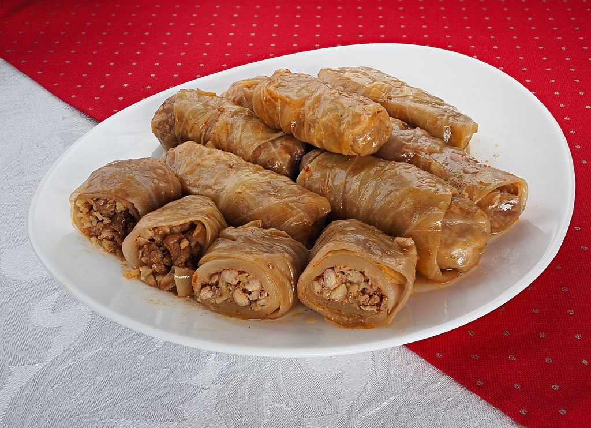

Serbian Stuffed Cabbage (Sarma)

Description
Sarma (Turkish for "wrapping" or "rolling"; Cyrillic: Сарма) is a traditional food in Ottoman cuisine (nowadays, Turkish, Greek, Armenian, etc.) made of vegetable leaves rolled around a filling of minced meat, grains such as rice, or both. It is commonly marketed in the English-speaking world as stuffed grape leaves, stuffed vine leaves, or stuffed cabbage leaves. The vegetable leaves may be cabbage, patience dock, collard, grapevine, kale or chard leaves. Sarma is part of the broader category of stuffed dishes known as dolma, and has equivalents (such as the Polish Gołąbki) in Eastern European cuisines from the northern Baltic through Ukraine.
Ingridients
- 1 (3-to 4-pound) head cabbage
- 1 pound ground chuck
- 1/2 pound ground pork
- 1 cup raw rice, rinsed
- 1 (1.4-ounce) package dehydrated onion soup mix
- 1 (32-ounce) jar sauerkraut, rinsed and drained
- 6 medium smoked ribs, ham hocks, or other smoked meat
- 1 (8-ounce) can tomato sauce
- 1 (10 3/4-ounce) can tomato soup
Steps
- Cut the core out of 1 (3- to 4- pound) head cabbage and discard. In a large pot partially filled with boiling water, steam the cabbage, cut-side down. Reduce the heat to medium, cover and steam until the outer leaves are limp, about 8 to 10 minutes. Use tongs to remove the larger softened leaves. Continue to steam and remove larger leaves as they become done until you have about 22 to 23 whole large cabbage leaves. Reserve any remaining steamed cabbage.
- With a paring knife, remove the tough ribs without damaging the leaves. Discard the cabbage ribs or reserve for another use.
- In a large bowl, mix together 1 pound ground chuck, 1/2 pound ground pork, 1 cup raw rice, and 1 (1.4-ounce) package dehydrated onion soup mix.
- Add a small amount of water to make the mixture easier to handle.
- Set 3 or 4 of the leaves aside. Heap about 1/4 cup of filling onto each of the remaining cabbage leaves.
- Fold the bottom of the cabbage leaf up over the meat.
- Fold sides to the center and roll away from yourself to completely encase the meat.
- Repeat until all the meat filling is used.
- Position a rack in the center of the oven and heat to 350 F.
- Coarsely chop the remaining steamed cabbage, not including the reserved leaves.
- Spread the chopped cabbage on the bottom of a large casserole dish or Dutch oven. Add 1 (32-ounce) jar drained sauerkraut.
- Layer on the cabbage rolls, seam-side down.
- Cut 6 medium smoked ribs (ham hocks or other smoked meat) into pieces. Space the ribs or other smoked meat of choice between the cabbage rolls.
- Cover rolls with reserved whole cabbage leaves.
- Whisk 1 (8-ounce) can tomato sauce and 1 (10 3/4-ounce) can tomato soup with enough water to give it a pourable consistency.
- Pour the tomato sauce over rolls until the mixture is level with rolls, but not over the top.
- Cover the casserole dish and bake 1 hour.
- Reduce temperature to 325 F and bake for 2 more hours.
- Let sit 20 to 30 minutes before serving.
- Serve with the ribs.